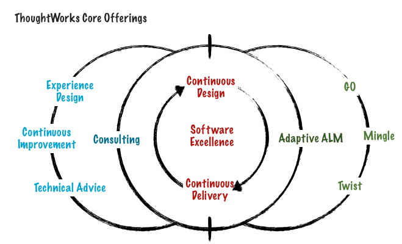

回到北京之后，有人提出让我和公司刚成为商务分析师的同事聊聊天，这个团体中的很多人都开始抱怨这个职位的琐碎，很多人不知道未来这个职位应该如何发展，那么这篇文章便是为他们而写的。
你该做什么？
其实道理太简单不过了。当“我该如何成长”的疑问出现在你脑海里时，你应该做以下几件事：
了解你所在组织准备如何成长； 了解你组织成长轨迹中所需要的技能； 寻找到那些具备这些技能的人，和他们建立关系； 了解那些人是如何把自己的技能转化成价值帮助组织成长的； 问你自己这样的工作方式是不是你所喜欢的，或者是不是可能达到的； 决定你的成长方向和学习计划； 如果你需要向组织提出帮助你成长的资源，拿着你的计划和你的老板说； 整个事情的逻辑是，当我问你“你的组织未来将如何发展”而无法给我和你自己一个清楚满意的答案时，你一定正在或者将要受到“未来在哪”的困扰。
那么作为 ThoughtWorks来说，未来是什么样的？这是这篇文章希望帮助你了解的。
ThoughtWorks的Offerings
任何一个服务或产品提供型的组织而言，组织所能够提供的服务或产品(Offerings)的蓝图就是这个组织在未来若干年发展的核心轨迹。那么ThoughWorks的Offering结构是什么？

ThoughtWorks的核心价值观是Software Excellence─即追求卓越的软件。而围绕在卓越软件外围的是两个核心的相关方法论：持续交付和持续设计；在核心方法论外围的是两个核心的服务，位于左侧的咨询服务，包括体验设计、组织级别的持续改进、以及技术咨询，位于右侧的ALM(敏捷生命周期管理)相关产品和咨询服务，包括三个核心产品GO，Mingle和Twist的推广。
这个模型将ThoughtWorks的核心重新归于软件的完美交付，并将Studio产品的推广重新包装成Adaptive ALM的概念。新模型的特点在于，从任何一个点进入，不论是软件交付、咨询服务、还是Studio产品，都可以最后将整个ThoughtWorks的Offering整体交付给客户。这样的例子不胜枚举，这也是ThoughtWorks可以建立起稳定长期客户关系的关键之所在。
哪些你可以提供价值？
当你的脑子里有了这个图，那么思考一下，这张图里的哪些部分是你可以提供价值的？
- 我是否追求软件卓越？
- 我是否可以在帮助团队持续交付？
- 我是否可以在软件设计方面提供持续的价值，并有足够技能使得设计变成最终交付？
- 我是否可以帮助客户团队进行持续改进活动？
- 我是否可以提供体验设计的服务？
- 我是否可以为客户提供高层次的技术指导？
- 我是否可以帮助公司推广ALM的概念，并销售Studio的产品？
这些问题有哪些你可以回答“是”？
行动前问自己
很自然，那些你不能回答“是”的部分，就是组织需要而你未曾拥有的。下一步，便是一系列在你行动前需要搞清楚的问题，它们包括：
- 每个是非问题背后是什么？
- 都需要什么样的技能？
- 组织里谁在做这样的事情？
- 他们的工作是怎样的？
- 你爱那样的生活吗？
如果你发现你所缺失的东西而正在被别人经历，又恰好这种经历是你所喜欢的，同时又是组织迫切需要的，那么恭喜你，你找到了在组织内的方向。接下来的一步便是制定行动计划。
关于行动的建议
关于行动计划，我能够给你的建议是：
明确你想在哪方面提升，紧紧贴合组织的核心Offering，不要提升类似“与客户的沟通”这样的能力，它缺乏目的性也无法进行反馈和验证，最好的验证是当组织需要你提供这个Offering时候你可以参与；
利用组织的资源，TW是非常开放的组织，你要做的事情是找到那些你想提升方面在行的人，多和他们交流，看看他们喜欢什么，模仿他们，例如，我很喜欢体验设计领域的Jason Furnell，我收藏了他的博客、收藏链接、不定期地和他交流、关注他关注的话题自己也写博客。当然最好的方式是想办法和他们工作，你需要让RM知道你爱和谁工作，这样会让你提升，如果你不提，你千万别抱怨自己是螺丝钉；
设定半年的目标，让自己明白自己要做什么，明确的，而不是空泛的，并记录下你的进步，让自己看到，也让别人看到，写博客是最好的方法。
希望你能够明白，你的未来就在于你与这个组织所需要的价值的契合度，如果你认为这个组织是你可以实现职业理想的地方，不断提升契合度就是你能够在组织内脱颖而出的关键。